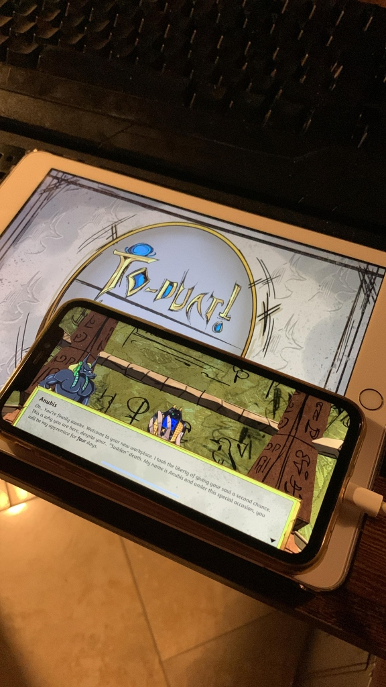

Description
To-Duat! is a chaotic first-person simulator set in Ancient Egypt, developed as a team academic project. The player takes on the role of a sinner temporarily replacing Anubis in his funerary rites.
Across five working days, the goal is to complete frantic and complex rituals: analyzing corpses, purifying diseased organs, applying ritual ointments, and most importantly, weighing the hearts of the dead to decide their fate.
The game combines time-based gameplay with chained tasks and daily variations: every mistake or delay directly affects the player’s own heart, which will be judged by Anubis at the end of the week. The toon art style and inspirations from titles like Overcooked, The Mortuary Assistant, and Papers, Please give the game a unique tone that mixes humor and tension.
Role & Contribution
In this project, I often acted as a technical lead, making key decisions to push the work forward and resolve production bottlenecks. My contributions spanned multiple disciplines:
Audio & Sound System
Managed the entire audio pipeline including sound effects, OST, and contextual feedback. Linked audio events to gameplay and UI to ensure immediate player reinforcement.
Localization
Designed and implemented a scalable multilingual system across UI, dialogues, and interactions, enabling the game to reach broader markets.
Scene Management & Game Flow
Developed optimized scene loading systems with transitions and resource handling to maintain stable performance.
Dialogue System
Built an interactive, extensible dialogue system fully integrated with localization and audiovisual feedback.
Shader & Artistic Support
Developed custom Toon and Ghost shaders. Worked closely with artists to streamline the Unity pipeline and resolve technical asset integration issues.
Gameplay & Team Support
Contributed to core systems (character controller, saves) and managed complex merges between parallel branches to keep the build stable.
Gameplay Walkthrough
Watch the core mechanics in action, including corpse preparation, ritual procedures, and the heart-weighing ceremony.
Extra Work - Personal Initiative
After finishing the project, I took the initiative to port the game to mobile devices (iOS/iPhone/iPad) and MacOS. I also integrated a virtual gamepad for the mobile versions to ensure a smooth experience without a physical controller.
